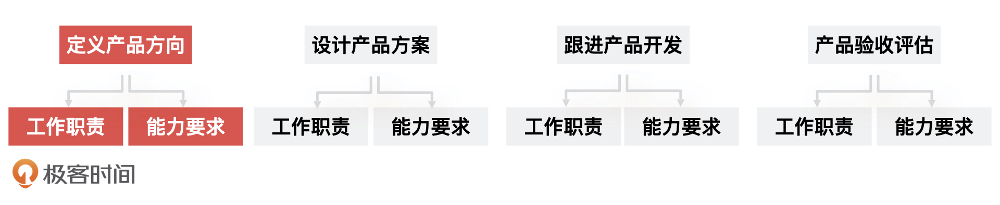
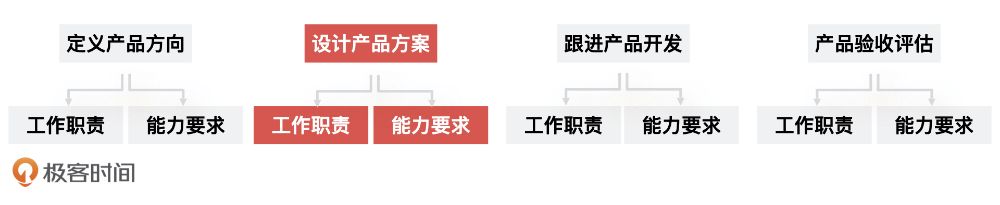
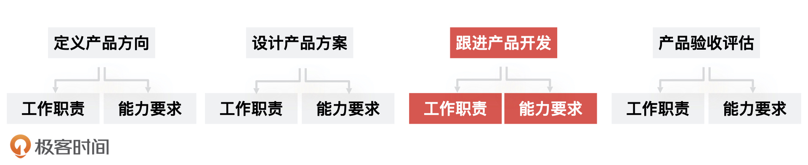
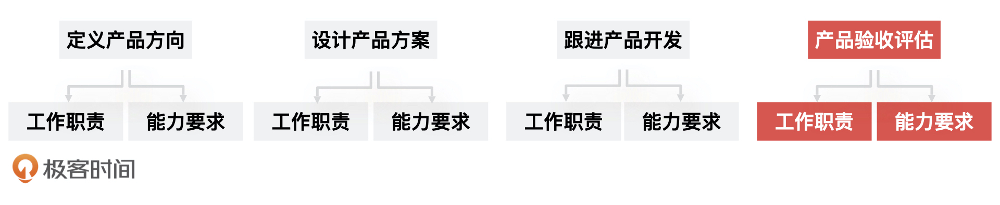
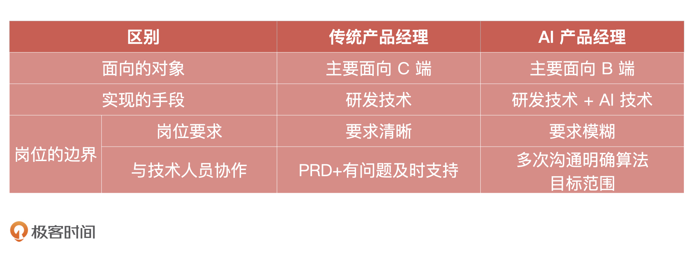

- 00 开篇词 你好，产品经理！你的未来价值壁垒在哪儿？.md.html
- 01 行业视角：产品经理眼中的人工智能.md.html
- 02 个人视角：成为AI产品经理，要先搞定这两个问题.md.html
- 03 技术视角：AI产品经理需要懂的技术全景图.md.html
- 04 过来人讲：成为AI产品经理的两条路径.md.html
- 05 通过一个 AI 产品的落地，掌握产品经理工作全流程.md.html
- 06 AI 模型的构建过程是怎样的？（上）.md.html
- 07 AI模型的构建过程是怎样的（下）.md.html
- 08 算法全景图：AI产品经理必须要懂的算法有哪些？.md.html
- 09 K近邻算法：机器学习入门必学算法.md.html
- 10 线性回归：教你预测，投放多少广告带来的收益最大.md.html
- 11 逻辑回归：如何预测用户是否会购买商品？.md.html
- 12 朴素贝叶斯：让AI告诉你，航班延误险该不该买？.md.html
- 13 决策树与随机森林：如何预测用户会不会违约？.md.html
- 14 支持向量机：怎么预测股票市场的涨与跌？.md.html
- 15 K-means 聚类算法：如何挖掘高价值用户？.md.html
- 16 深度学习：当今最火的机器学习技术，你一定要知道.md.html
- 17 模型评估：从一个失控的项目看优秀的产品经理如何评估AI模型？.md.html
- 18 核心技能：产品经理评估模型需要关注哪些指标？.md.html
- 19 模型性能评估（一）：从信用评分产品看什么是混淆矩阵？.md.html
- 20 模型性能评估（二）：从信用评分产品看什么是KS、AUC？.md.html
- 21 模型性能评估（三）：从股价预测产品看回归算法常用的评估指标.md.html
- 22 模型稳定性评估：如何用PSI来评估信用评分产品的稳定性？.md.html
- 23 模型监控：产品经理如何建设算法模型监控指标体系？.md.html
- 24 推荐类产品（一）：推荐系统产品经理的工作职责与必备技能.md.html
- 25 推荐类产品（二）：从0打造电商个性化推荐系统产品.md.html
- 26 预测类产品（一）：用户复购意向预测的底层逻辑是什么？.md.html
- 27 预测类产品（二）：从0打造一款预测用户复购意向的产品.md.html
- 28 预测类产品（三）：从0打造一款“大白信用评分产品”.md.html
- 29 自然语言处理产品：从0打造一款智能客服产品.md.html
- 30 AI产品经理，你该如何提升自己的价值？.md.html
- 31 AI产品经理面试，这些问题你必须会答！.md.html
- 春节加餐1 用户增长模型：怎么利用AI技术判断新渠道性价比？.md.html
- 春节加餐2 一次答疑，带你回顾模型评估的所有基础概念.md.html
- 期中周测试题 ，你做对了吗？.md.html
- 期中答疑 AI产品经理热门问题答疑合集.md.html
- 结束语 唯一不变的，就是变化本身！.md.html
- 捐赠
02 个人视角：成为AI产品经理，要先搞定这两个问题
你好，我是海丰。今天，我们来聊聊 AI 产品经理的工作职责与能力要求。
假设，你正在参加一个 AI 产品岗的面试，面试官问了你这两个问题，你会怎么回答：
- 你觉得 AI 产品经理和传统产品经理有什么区别？
- 在你看来 AI 产品经理的工作职责是什么？
你可别小瞧这两个问题，这实际上是面试官在考察面试者对 AI 产品经理这个岗位的理解程度，以及你到底有没有相关的实战经验，甚至在工作中有没有独立的思考。
因此，这两个问题如果能回答好，我们肯定能给面试官留下一个好的印象。而且，搞清楚这两个问题，也能帮助你在转型时更清楚这个岗位的要求，能够有的放矢地去补足自己的短处，发挥自己的优势。
AI 产品经理和传统产品经理有什么区别？
我们先来看看，AI 产品经理和传统产品经理的区别。从 “AI产品经理” 这个词来看，它可以分解为“产品经理” + “AI”，AI 产品经理作为产品经理，核心职责和底层能力与传统产品经理是一致的，仍然是通过技术手段实现业务目标，但是它们在面向的对象，使用的技术，以及岗位边界这三个方面却大有不同，不同在哪呢？接下来，我详细给你讲讲。
首先，我们来看面向对象上的不同。传统的产品经理更多活跃在 C 端，他们面向的是用户，比如电商产品经理、策略产品经理、社区产品经理等等。但是 AI 产品经理更多活跃在 B 端，面向的是各大企业，而且 AI 产品更多应用在 B 端的场景下，比如云从科技的人脸识别产品，大多是给到银行，应用于银行的自动柜员机开户等场景。
之所以有这些不同，主要是 C 端场景的产品，前期大部分都需要烧钱获客。但是对当前市场来说，线上流量越来越贵，C 端产品想要有所突破越来越难，倒不如去做 B 端服务，通过给企业服务的方式完成 AI 产品商业化。
其次，是实现产品目标的技术手段不同。传统产品经理对接的是研发工程师，需要通过研发工程师的代码，来完成产品的功能实现，那他们使用的就是研发技术。
而 AI 产品经理对接的是算法工程师和研发工程师，需要对接算法工程师完成具体的模型，再对接研发工程师进行工程开发联调和上线。最终，我们得到的产品形态可能是一个 API 接口，没有所谓的页面。比如，腾讯的人脸识别产品，对外暴露的就是一个 HTTP 接口，接口名称为人脸检测与分析，接口描述是识别上传图像上面的人脸信息，API 地址为 https://api.ai.qq.com/fcgi-bin/face/face_detectface。
基于这种情况，AI 产品经理除了要懂一些基本的研发技术之外，也需要深入学习算法知识，比如工作中常用到哪些算法，以及它们的实现逻辑等等。甚至，由于整个 AI 行业仍处于早期阶段，也就是技术驱动的阶段，因此 AI 产品经理需要了解更多的技术知识。
只有当整个 AI 行业趋于成熟，技术壁垒逐渐打破的时候，AI 产品经理才可以对技术只要做到了解就够用了。至于 AI 相关的技术，以及这些技术你需要掌握到什么程度，我会在后面的课程中和你详细说。
最后，我们再来看看 AI 产品经理在岗位边界上的不同。这个边界可以分为两个方面，一个是岗位要求的边界，一个是和技术人员协作的边界。
我们先来看传统产品经理的岗位要求。传统产品经理的岗位要求非常清晰，一般来说，电商产品经理需要懂得电商业务、供应链、电商后端设计，了解用户裂变、营销活动设计，社区产品经理要有社区、社交产品经验。而且每一家企业相同岗位的 JD （职位描述）差别不会太大。但 AI 产品经理的岗位要求非常模糊，同样是 AI 产品岗位，有的公司会要求你具有行业经验，不要求你懂技术，而有的公司会要求你必须懂技术，甚至要求你能看懂 Python 代码。
为什么 AI 产品经理的岗位要求这么模糊和混乱呢？这主要是因为 AI 产品岗位比较新，很多公司还不能确定这个岗位要做的事情。有些技术导向型的公司就希望产品经理懂技术，甚至是研发转岗过来的，有些偏业务导向的，则希望产品经理有丰富的行业经验。当然，也不排除有些公司对这个岗位自己都没有想法，只是从网站上抄袭 JD。
对于这种情况，我的建议是，你要先确定你的目标与能力项，再去根据 JD 内容挑选合适的岗位，但也不要被 JD 迷惑，觉得有些公司要求技术很复杂，你就要去学习如何做机器学习算法模型。当然，如果你本身就是一个技术极客，有这方面的热忱，那就正好可以去这样的企业试试。
岗位要求的边界说完了，我们再来看看和技术人员协作的边界。这里说的不同主要体现在，传统产品经理和研发协作时候，只需要提供 PRD 文档（产品需求文档），对需求进行讲解，有问题及时提供解答就可以了。但是 AI 产品经理很难产出一个 ROI（投资回报率） 指标明确的 PRD 文档，以及我们和算法同学的沟通也不是一次需求宣讲就能完成的，通常我们需要进行多次的沟通确认，并且在沟通中逐渐清晰对于算法目标范围的设定。
这里有点绕，我来举个例子，我曾经给算法同学提过需求，要求他们做一个细分场景的信用评分模型。这个时候，我没有办法明确说你的模型区分度要达到 30 还是 31。我只能要求，这个模型在我们自己的业务样本下，模型区分度应达到 35 以上，毕竟算法本身同样具有不确定性。
AI 产品经理的工作职责和能力要求是什么？
正是因为 AI 产品经理和传统产品经理之间有这些不同，所以他们在工作职责和能力要求上也会有所不同。AI 产品经理需要知道，你在什么场景下，可以通过什么样的技术来解决问题，解决到什么程度。比如，在智能客服场景，你可以通过自然语言理解技术让机器去回复一些标准的问答，来减轻人工客服的压力，但对于强个性化的用户问题，还是需要人工介入来解决的。
接下来，我就通过 AI 产品上线的过程，来和你详细讲讲 AI 产品经理的工作职责。一般来说，一个 AI 产品上线的流程大致可以分为，需求定义、方案设计、算法预研、模型构建、模型评估、工程开发、测试上线等几个步骤。这其中，产品经理需要主导的节点有定义产品方向、设计产品方案、跟进产品开发和产品验收评估，那我们重点关注这四个步骤。
1. 产品经理对产品方向进行定义

在我们决定做一个 AI 产品的时候，不管是处于基础层还是技术层或者是应用层的 AI 产品经理，首要的职责都应该是去定义一个 AI 产品。这包括，搞清楚这个行业的方向，这个行业通过 AI 技术可以解决的问题，这个AI产品具体的应用场景，需要的成本和它能产生的价值。
这就要求 AI 产品经理除了具备互联网产品经理的基础知识之外，还需要了解 AI 技术的边界，以及通过 AI 技术能够解决的问题是什么。
2. 产品经理给出产品的设计方案

完成了产品定义之后，产品经理需要给出产品的设计方案。产品的设计方案会根据产品形态不同而不同，比如硬件和软件结合的 AI 产品，会包括外观结构的设计，机器学习平台的产品需要包括大量的交互设计，模型类的产品（推荐系统、用户画像）更多的是对于模型上线的业务指标的要求。
在这个阶段， AI 产品经理需要了解，现在市场主流算法都有哪些，不同的算法应用场景是什么，算法的技术边界在哪里。
比如，我们要从0到1做一个推荐系统，并且希望它能尽快上线，但如果模型同学打算用某种创新的深度学习模型去做就不合适了。因为深度学习的模型不仅技术难度高，而且模型训练时间久，需要的算力也更多，还有关键的一点是在推荐系统的0到1阶段，业务方领导会要求模型具有可解释性，所以创新模型就不如简单地协同过滤，加逻辑回归实现起来方便快捷。
只是对于技术人员来说，他们更希望用新技术去解决问题，如果我们完全不懂技术，用了深度学习模型之后，可能推荐系统上线周期不但增加了不少，而且效果也不一定会比传统的机器学习方式好多少。这个时候，产品经理就需要通过自己掌握的技术知识去把控技术和业务的平衡了。
另外还有一种更常见的情况，产品经理在和算法同学沟通方案的时候，他们会说，“这个模型我打算用 XGBoost 去做”，或者“目前很多数据没有结构化，我们需要先把一些数据结构化并且做归一化处理”等等。
相信很多同学看到这里都会有些懵，什么是 XGBoost，什么又是归一化？如果产品经理不停地去问算法同学这些问题，估计没有几个算法同学会愿意一点点去解释这些基础名词。
所以，对于 AI 产品经理来说，此阶段的能力要求为，基本的技术知识是必须要了解的。这些包括基本的统计学概率论知识，主流算法的基本原理和应用场景，以及这些算法可以帮助我们达成什么样的产品目标。
3. 产品经理跟进产品上线

产品设计完成之后，就到了工程和算法同学分别进行开发的环节了。在这个过程中，你需要承担一些项目经理的职责，去跟进项目的上线进度，协调项目资源。
因此，这个阶段产品经理至少要知道模型的构建过程是怎么样的，否则产品经理怎么能够评估当前进度到哪里了呢？另外，产品经理还需要知道模型构建过程中，每个节点的产出物，以及它的上下游关系。只有这样，产品经理才可以清楚评估项目进度，遇到需要协调资源的时候，也知道产品在这个阶段需要的是什么。
4. 产品评估

产品开发完成之后，产品经理还需要验收产品是否满足业务需求。
在这个阶段，产品经理的能力要求是，需要知道如何去评估一个模型，评估模型的指标都有哪些，具体评估的过程是怎么样的，以及评估结果在什么范围内是合理的。比如，你的算法工程师告诉你，这个模型的区分度是 40，那你至少要知道区分度是怎么计算的，40 是不是一个合理的数字。只有这样，产品经理才算对产品有完整的了解和把控。
总结
今天，我们先从三个方面一起讨论， AI 产品经理和传统产品经理的不同，它们主要是面向的对象、实现的技术手段和岗位的边界。具体的不同你可以看我整理出的表格。

总体来说，不管是处于哪个层级的产品经理，除了互联网产品经理的基础能力之外，还需要掌握的能力是：
了解 AI 技术的边界，知道 AI 能力可以做什么，不能做什么；
懂得基本的统计学、概率论知识，了解市场上主流的算法和原理，知道它们适合的应用场景；
知道模型的构建流程是怎么样的，构建过程中每个节点产出物是什么，以及其中的上下游关系；
要有能力去评估一个模型，知道模型评估的标准、评估的方法，评估结果的合理范围。
除此之外，我还想给你一点建议，如果你希望成为一个 AI 产品经理，除了在工作中积累行业、业务知识，还需要尽快补齐技术部分的知识。这样不管是内部转岗，还是去寻找外部机会，面试官都会认为你是有备而来，这是很大的加分项。
课后讨论
相对技术转型的同学来说，你觉得你的优势和劣势分别在哪？你想要怎么改进？
欢迎把你的困惑写到留言区，我们一起讨论。
© 2019 - 2023 Liangliang Lee. Powered by gin and hexo-theme-book.